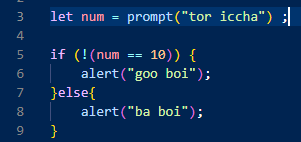
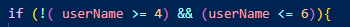
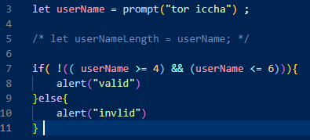

>>> Logical (!) Not Operator <<<
এই operator এর মুল কাজ হচ্ছে true কে false আর false কে true করে দেওয়া ।
logical operator এর ধর্ম অনুযায়ী not (!) operator তার operand কে boolean এ কনভার্ট করবে ।
তারপর তার কাজ হল সেটাকে reverse বা বিপরিত করে দেওয়া ,
হ্যাঁ কে না আর না কে হ্যাঁ করা ।
অর্থাৎ operand এ true থাকলে সেটাকে false করে দেওয়া ।
And ( && ) -- OR ( || ) operator 2 টা operand নিয়ে কাজ করলেও ,
Not ( ! ) operator শুধু মাত্র 1 টা operand নিয়ে কাজ করে ।
not operator প্রথমে তার operand কে boolean এ কনভার্ট করে ,
আর boolean এ কনভার্ট করার পরে সে একটা result হিসেবে true বা false পাবে ।
যেহেতু এটা not operator সেহেতু তার operand থেকে পাওয়া result কে reverse করে সেটা retrun করবে ।
অনেক সময় logic build করতে গিয়ে এমন এমন logic build করতে হয় যে ,
এটা যদি এটা না হয় তবে এটা দেখাও ।
ঠিক এমন পরিস্থিতিতে একটা equal condition বানিয়ে সেটাকে একটা first bracket এর মধ্যে রেখে তার ডান একটা Not (!) operator দিয়ে দিলেই কাজ হবে ।
যেমনঃ-
ex:-

এখানে prompt এর মধ্যে যদি 10 ছাড়া অন্য যেকোনো value দেওয়া হয় তবে if , run হবে ।
আর যদি 10 দেওয়া হয় তবে else , run হবে ।
কারন এখানে not (!) operator এর সাহায্যে একটা statement build করা হয়েছে যেখানে if এর condition টাকে reverse করে ফেলবে ।
তাই এখানকার
num Equal 10 __ (num == 10) এর আগে ! not operator টা ব্যেবহার করার কারনে পুরো condition টা not বা reverse হয়ে গেছে । এর মানে false .
>>> string's length calculation <<<
মাঝে মাঝে কোন string এর length এর কোন limitation set করতে হয় যে যদি user 4 থেকে 6 length এর সমান সংখ্যক কোন value দেয় তবে তাকে দেখাও invalid এর আর যদি 4 এর কম ও 6 এর বেশি lenght এর userName দেয় তবে দেখাও valid ।
ex:-
মনেকরি UserName = 7

এখানে and operator , retrun করবে false কারন তার বাম পাশের operand , false ।

এখানে and operator , false , retrun করার পরে সেটা not operator এর সাথে evluate হয়ে and operator এর retrun করা false সে reverse হয়ে true হয়ে যাবে ।
main ex:-

এখন prompt এর মধ্যে যেহেতু 7 আছে , সেহেতু সেটা if এর condition এর সাথে evluate হয়ে true পাবে এবং তাই if , run হবে ।
so result = valid ।